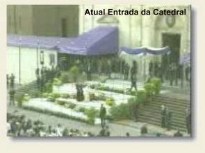

ALCANÇANDO A IMORTALIDADE
A SAGRADA EUCARISTIA
Rosa encontrou o estimulo e a força para sua vida na Eucaristia, e pelas orações do Rosário sentiu a ternura do seu grande amor a VIRGEM MARIA e a maravilhosa retribuição da MÃE DE DEUS.
A Eucaristia sempre foi o Sacramento central do Cristianismo, porque JESUS o instituiu para estar presente e junto de nós, com o Seu Corpo, Sangue, Alma e Sua Divindade, ao longo da nossa caminhada existencial.
Segundo o relato do seu Confessor Frei Juan de Lorenzana, por sua piedade e devoção, Santa Rosa recebeu de DEUS, o dom dos milagres. Ela era visitada constantemente pela VIRGEM MARIA e pelo MENINO JESUS, que inclusive, repousou em seus braços e colocou na cabeça dela uma coroa com uma grinalda de rosas. Também é confirmado por diversos Confessores da Santa, que ela constantemente conversava com o seu Anjo da Guarda.
Em repulsa a cisão protestante, que nega a presença real de CRISTO na Eucaristia, afirmando que a Hóstia Consagrada é apenas uma "representação" do SENHOR JESUS, a Igreja Católica intensificou o culto ao Sacrário, e tem provado, através do NOVO TESTAMENTO, que NOSSO SENHOR está verdadeiramente presente na Hóstia Consagrada, em todos os Sacrários do mundo, em Corpo, Sangue, Alma e Divindade, a disposição e para alimento espiritual de todos os fiéis.
Conhecedora desta verdade, Rosa passava noites em adoração ao SANTÍSSIMO SACRAMENTO, como também durante o dia, passava muitas horas do seu tempo disponível diante do Sacrário, rezando e adorando JESUS SACRAMENTADO.
A vida de Rosa se constituía na realidade de rezar e sofrer pelos outros, por amor a DEUS. E também tinha uma grande preocupação em rezar pelas almas, suplicando a misericórdia do SENHOR, a fim de que elas subissem para o Céu.
A EREMITA
O quotidiano dela nunca era diferente: vestia o seu imaculado hábito de Terceira Dominicana e se cobria com o véu, cuidava das flores e ervas no jardim e se aplicava nas costuras e bordados. Andava completamente alheia aos rumores que se espalhavam na cidade, de que ela era tão Santa como aqueles grandes servos de DEUS: Arcebispo Turíbio, Padre Solano e Irmão Martim Porres. Dificilmente passava um dia em que homens e mulheres não viessem lhe pedir orações, consultá-la sobre outros assuntos, tocar na imagem do MENINO JESUS, o "Pequeno Doutor" , como ela dizia. Comentavam as pessoas:
- "Rosa é uma verdadeira Santa: jejua o tempo todo, dorme somente duas horas por noite e devotou-se inteiramente à salvação dos pecadores".
Esta noticia chegando ao conhecimento dela, como reação imediata quis se isolar ainda mais. Suplicou a sua mãe que lhe permitisse ser uma eremita. Queria permanecer no cantinho do seu oratório distante de comentários que não lhe agradavam, a fim de continuar com os seus afazeres, sem ser incomodada. Mas a mãe não quis aceitar o pedido e só depois de muita insistência do Padre Alonso, afirmando que aquele procedimento seria muito bom para Rosa, Dona Maria acabou concordando.
E assim, nos dias seguintes, Rosa e seu irmão Fernando estiveram muito ocupados para escolher o melhor local e marcar o terreno onde seria construído o eremitério. Desta vez foi numa área bem ensolarada, junto a casa. Mas a construção era muito pequena, Rosa quis assim: um cômodo com 1,50 m de comprimento por 1,20 m de largura e pé direito menor que 2 metros de altura. Tinha uma pequena janela de 0,60 x 0,40 e a porta de entrada tinha 1 metro de altura e largura de 60 centímetros. Para entrar e sair, só engatinhando. E ali Rosa começou a sua vida de eremita.
Certo dia, sua mãe chegou toda aborrecida e nervosa, e chamou a atenção dela, porque Rosa tinha divulgado para algumas pessoas, que bem próximo a Lima seria construído um Mosteiro de Freiras Dominicanas, que receberia o nome de Mosteiro de Santa Catarina de Sena, e que a senhora Lucia de La Daga, será a primeira Prioresa.
- "Sim mamãe, é verdade. Dona Lucia irá para lá com sua irmã Clara, e o Padre Luís de Bilbao, celebrará a primeira Santa Missa de inauguração do Mosteiro."
- "Mas como é que pode Rosa, Dona Lúcia é uma senhora casada, tem um bom marido e cinco filhos? Ela vai abandonar todos eles? Como poderá acontecer isto? Daqui a pouco você vai falar que eu vou construir um Convento".
- "Não mamãe, a senhora não vai fundar um Convento, mas vai entrar num Convento, algum dia. E Dona Lúcia lhe dará o hábito dominicano e a senhora será muito feliz".
Evidentemente, a mãe não acreditou, e pensou que fosse uma fantasia inventada por Rosa. Mas era verdade. A filha só não lhe explicou que quem havia lhe revelado este grande segredo foi Santa Catarina de Sena, que a visitou diversas vezes. Passaram-se os meses e Rosa continuava na sua vida de eremita.
OS PIRATAS HOLANDESES
Completou 29 anos de idade no dia 30 de Abril de 1615. Na semana seguinte, ela foi surpreendida por uma grande quantidade de pessoas, nervosas e aflitas, que se aglomeravam no jardim da sua casa, querendo falar com ela. Eram mulheres que choravam e homens e rapazes apavorados, demonstrando medo e preocupação, em face da chegada de uma notícia terrível, que estava causando grande pavor: ancorou em frente ao Porto de Callao, a cerca de 20 quilômetros de Lima, uma frota de navios de piratas holandeses, que provavelmente se preparavam para invadir a cidade.
Textos informativos daquela época descrevem com admiração o zelo demonstrado por Rosa na ocasião, principalmente considerando que desse modo, a cidade de Lima corria o perigo de cair sob o domínio dos piratas holandeses, que eram terríveis protestantes. Esses piratas buscavam o ouro que os espanhóis retiravam das minas peruanas e levavam nos seus navios para a Europa. Mas, naquela época, em face do clima de ódio nascido entre católicos e protestantes por causa da famosa Reforma Luterano-Calvinista, os piratas que vinham roubar o ouro também aproveitavam para profanar os Templos cristãos e os Sacrários das Igrejas.
Rosa foi a Igreja em companhia daqueles que foram visitá-la. A Igreja já estava cheia de pessoas que rezavam e suplicavam a misericórdia e a proteção Divina. Ajudada pelos membros dos grupos religiosos, organizou uma cruzada de orações diante do Sacrário e diante da imagem da VIRGEM DO ROSÁRIO, que funcionou como precioso baluarte de defesa religiosa para combater através das fervorosas orações e dos sacrifícios pessoais, a terrível investida do mal que se esboçava.
O Corsário holandês Jorge Spilbergen projetava entrar no Peru, já estava ancorado no Porto de Callao, mas, inexplicavelmente, depois de uma semana de preparo, aconteceu um fato que só pode ser explicado como firme atuação da Providência Divina, para proteger os habitantes e a cidade de Lima: o Corsário holandês, que tinha fama de mal e perverso, adoeceu e morreu em poucos dias. O comando naval imediato dos piratas decidiu suspender a invasão e retornar a sua pátria.
Este extraordinário desfecho foi atribuído às orações e ao movimento articulado pela Irmã Rosa, em defesa da fé, das tradições cristãs e do povo em geral. Em memória deste triunfo a Santa é representada com uma âncora, numa alusão a tentativa de invasão dos piratas holandeses, permanecendo a cidade de Lima salva do perigo iminente.
ESPIRITUALIDADE COM SACRIFÍCIO E MARTÍRIO
Um dos traços característicos da espiritualidade de Santa Rosa foi a sua vivência da Paixão de CRISTO. JESUS completou a sua Obra, mostrando-nos o caminho da vida eterna, através dos seus ensinamentos e preciosos sofrimentos pela via da Cruz. Rosa procurava viver na sua carne o que faltava nos sacrifícios dos irmãos para a integralização da Paixão do SENHOR. Desse modo, ela forjou a sua própria cruz. Afirmam os seus biógrafos, que "desde jovem ela usou cilícios: pulseiras ou cinturões com espinhos, que espetavam sua carne e a mortificavam. Usou também disciplinas: chicotes que às vezes tinham um metal na extremidade, que arrancam sangue daqueles que com eles se flagelam. Usava uma correia de ferro bem justa, trancada com cadeado, que ela jogou a chave do cadeado no fundo de um poço. As feridas e a infecção causaram danos a sua saúde. Durante muito tempo usou um aro de espinhos na cabeça, oculto sob a toca do hábito religioso, lembrando a coroa de espinhos de JESUS. Num pequeno acidente com uma carroça, o senhor Gaspar, seu pai, descobriu os espinhos através do sangue que lhe corria pela face. Rosa justificou dizendo o seguinte: Isso serve para afastar as tentações".
Colocava pimenta nos olhos, para revelar que não estava bem e afastar as visitas que vinham perturbar o seu silêncio e as suas orações. Comia coisas amargas em memória do fel e do vinagre que deram a JESUS agonizante na Cruz. Seus jejuns eram extremamente rigorosos e tão fortes que obrigava sua mãe a se queixar: "Isso não é possível, Rosa, a não ser que queira se matar. Como pode trabalhar tantos dias sem comer?"
Para dormir usava como cama e travesseiro as coisas mais impossíveis: pedras, telhas, troncos de madeira. Durante a noite, em boa parte do tempo permanecia de joelhos em orações.
Estas e outras austeridades que ela praticava, no contexto religioso cristão, nos fazem entender que Rosa exercitava uma vocação para o martírio. Foi o caminho árduo que ela escolheu, mas que lhe dava a plena e total segurança de contar com o ESPÍRITO DE DEUS, que jamais nega qualquer auxílio ou proteção a aqueles que trilham um autêntico caminho para servi-LO.
CONSTRUIR UM MOSTEIRO
Imitar Santa Catarina de Sena era uma idéia fixa ao longo da vida de Rosa. Ela admirava o fervor, a inteligência e o notável discernimento da Santa, que viveu numa época difícil do Cristianismo, quando o Papa transferiu toda a administração da Igreja para Avignon na França. Santa Catarina iluminada pela Luz de DEUS ajudou diretamente o Papa, expondo-lhe as orientações e o desejo Divino, no sentido de que retornasse a sede do Cristianismo ao Vaticano em Roma.
Por outro lado, em face das revelações que Santa Catarina fazia a Rosa, houve uma interpretação errônea: algumas pessoas entenderam que ela ia construir um Mosteiro de Clausura no Peru, e justificando o seu fervoroso desígnio, Rosa teria dito: "A partir dele, muitas pessoas irão para o Céu".
Embora seja esta uma grande verdade, sempre existem pessoas que são a favor e outras contra em qualquer empreendimento, por isso, a noticia movimentou o ambiente religioso. E então, houve pessoas que se manifestaram contrárias a construção, porque consideravam que já existiam uma quantidade suficiente de Mosteiros, de outras Ordens Religiosas. Inclusive, um dos Confessores de Rosa chegou a se manifestar bastante cético a respeito da realização do projeto, quando soube do referido boato.
Todavia, na época oportuna o mal entendido foi esclarecido, assim como, no tempo definido pela Vontade Divina, foi construído um belo Mosteiro Dominicano, entregue a proteção de Santa Catarina de Sena.
Conforme crônicas da época, a sua própria mãe chegou a se opor à construção do Mosteiro. Então, nesta ocasião, Rosa lhe profetizou que ela mesma, a sua mãe, seria Monja naquele lugar. A mãe, muito decidida, como sempre, foi logo falando: "Serei Monja quando os elefantes voarem". E na verdade, os elefantes devem ter voado mesmo! Pois, com a obra concluída, certo dia aconteceu o badalar e repicar dos sinos no Mosteiro de Santa Catarina de Sena, anunciando a consagração de novas Monjas, inclusive da Monja Maria de Oliva y Herrera, mãe de Rosa.
DEIXOU O EREMITÉRIO
Por diversas vezes a mãe pediu a Rosa para ela deixar o eremitério e cuidar da sua saúde, mas ela educadamente não atendia e justificava que estava muito bem.
Certo dia, Padre Alonso Velásquez que era o Padre Superior dos Dominicanos, foi visitá-la e reforçou as palavras das pessoas amigas e principalmente da mãe, dizendo-lhe que todos estavam preocupados com ela vivendo naquele eremitério, porque a saúde dela estava declinando visivelmente. Inclusive Dom Gonçalo de La Maza e sua esposa, por diversas vezes insistiram em levar Rosa para casa deles, a fim dela se submeter a um tratamento adequado para a total recuperação da sua saúde. Mas ela sempre agradecia e dizia que estava bem e não necessitava de nenhum tratamento. Por essa razão, naquele dia, de modo mais incisivo, o Padre Alonso e Dona Maria foram conversar com ela, e Padre Alonso falou:
- "É nosso desejo Rosa, que você acabe com essa vida de dureza e vá para a casa do casal Maza, a fim de recuperar a sua saúde."
Rosa permaneceu silenciosa. Mas como ela era Dominicana Terciária, membro da família Dominicana, devia certa obediência aos Superiores. Assim, se o Padre Alonso, seu Superior, achava melhor para ela viver em outra parte, não competia a ela escolher e sim, obedecer, ou seja, fazer o que lhe era ordenado.
Ela respondeu: - "Irei sim, mas não estou realmente doente senhor Padre, NOSSO SENHOR me deu ainda dois anos para servi-LO."
E assim, Rosa foi para a casa de Dom Gonçalo e sua esposa. Não quis ficar como dama de honra ou visitante ilustre, assumiu tarefas na casa, mesmo contra a vontade do casal que a acolheu.
Os dias passavam sempre iguais como os outros anteriormente: rezando, fazendo roupas para crianças e pequenas toalhas para os Altares das Igrejas, e de vez em quando entretinha a família tocando harpa ou guitarra reproduzindo músicas, acompanhada com sua voz bonita e bem timbrada, deixando todos enlevados.
O calendário trouxe o ano de 1617, e a lembrança da previsão da morte dela na Festa de São Bartolomeu aflorava a mente de todas as pessoas que eram amigas e que a amavam. Ninguém suportava a idéia de perdê-la... Será que era certa aquela previsão de que DEUS a chamaria em breve para o Céu?
Aconselhada pelo Sacerdote Dominicano a não se preocupar com a profecia de Rosa sobre a morte próxima, a esposa do senhor Gonçalo e toda a família respiraram mais aliviados. De modo que, em fins de Julho, quando Rosa pediu permissão para visitar o seu eremitério no jardim da sua casa, lhe concederam sem dificuldades.
A MORTE DESEJADA
Todavia, durante a noite de 1º de Agosto, toda a casa despertou sobressaltada pelos gritos dolorosos que vinha do quarto dela. A esposa do senhor Gonçalo chegou rapidamente no quarto e a encontrou desfeita e atacada mortalmente, mal podendo respirar e todo o seu corpo estava paralisado. Com presteza chamou o Dr. João Del Castillo e também o amigo Padre João de Lorenzana. Ela recebeu com total lucidez o Sacramento da Confissão, a Eucaristia, o Santo Viático e a Unção dos Enfermos.
Mas, o estado físico de Rosa não reagia. Deram-lhe diversos remédios que não produziram nenhuma melhora.
Na véspera da Festa de São Bartolomeu ela estendeu a mão enfraquecida e pediu a esposa do senhor Gonçalo:
- "Posso ver meus pais? Eu queria lhes dizer adeus. Quero também pedir perdão a todos desta casa, por qualquer dificuldade que eu tenha causado".
Imediatamente chegaram os pais dela, Dona Maria Oliva e o senhor Gaspar.
A noticia de que Rosa não estava bem de saúde se espalhou pela cidade. Durante o dia muitos visitantes desfilaram pelo quarto dela: homens e mulheres, amigos, conhecidos, médicos e religiosos de várias Ordens. Ajoelhavam e rezavam, suplicando a misericórdia Divina.
Quando se aproximava da meia-noite, Rosa lançou um olhar às pessoas que estavam ajoelhadas ao seu redor. O seu rosto tinha uma expressão viva e, assumiu um aspecto mais belo do que nunca. Ela disse:
- "Por favor, não fiquem tristes porque vou deixá-los. Este é realmente um dia de muita felicidade!"
A seguir, baixou os olhos para o crucifixo que Padre Alonso lhe dera e disse baixinho:
- "JESUS, fica comigo..."
E entregou sua alma a DEUS. Amanhecia o dia 24 de Agosto de 1617, era o dia da festa de São Bartolomeu. Rosa estava com 31 anos de idade.
A morte de Rosa de Lima foi prevista e anunciada. Desde Maio de 1617 ela aludia com frequência a sua partida iminente, e inclusive, fixava a festa de São Bartolomeu, de quem era muito devota, como sendo a data marcada para o seu retorno a Casa do ETERNO PAI.
DEPOIS DA MORTE
À luz da fé cristã, a morte é o início da vida. Com a morte começou para Rosa a glória imortal. A notícia correu rápida as ruas da cidade de Lima, e comoveu a todos. Desde o Arcebispo ao Vice-Rei e até as pessoas mais simples, emocionando toda a sociedade.
O corpo foi velado na Igreja de São Domingos, e os Dominicanos tomaram algumas precauções, porque o povo que já a considerava em vida, uma verdadeira Santa, agora queriam uma relíquia de Rosa: tocar no seu rosário, pegar uma medalha ou santinho dela, tocar no seu corpo sem vida, se possível cortar um pedacinho do hábito da Santa, ou de seus cabelos, enfim, o povo queria uma recordação dela. E por isso mesmo, deram muito trabalho a fiscalização Dominicana.
O enterro praticamente não se realizou, porque a aglomeração de pessoas era muito grande, tornando-se impossível caminhar para depositar a urna com Rosa na sepultura. Assim, o corpo dela acabou sendo enterrado na Sala Capitular do Convento de São Domingos, onde eram enterrados os religiosos. Esta sala ficava dentro da área da clausura e não podia ser visitada pelo povo em geral. As reclamações vieram imediatamente. Em consequência da pressão popular que foi grande e intensa, cerca de dois anos depois, se conseguiu o translado dos restos mortais da Santa para um novo túmulo, que foi construído dentro do templo.
A visitação era intensa e logo, em poucas semanas, começaram a aparecer as noticias de feitos sobrenaturais, de milagres notáveis de curas obtidas de DEUS NOSSO SENHOR, pela preciosa e eficaz intercessão de Santa Rosa de Lima.
A este clamor popular realçando a santidade da Irmã Rosa uniu-se a ação oficial. Foi instaurado o processo para a Beatificação no ano de 1624.
BEATIFICAÇÃO E CANONIZAÇÃO
No texto do processo de Beatificação, falou-se muito das lutas que a Santa travou contra o maligno. Ela o chamava de "Paton Tiñoso". Era o diabo, a tentação que queria limitar as suas ações de praticar o bem. À medida que a pessoa é mais generosa com DEUS, ela sofre muito mais o assédio de satanás, que se esforça para lhe impor limitações.
O Papa Clemente IX oficializou o culto que o povo já prestava a Rosa. A cerimônia da BEATIFICAÇÃO aconteceu na Basílica de São Pedro no Vaticano, no dia 15 de Abril de 1668.
No ano seguinte (1669) o Sumo Pontífice, Papa Clemente IX, proclamou a Beata Rosa de Lima, Padroeira do Peru.
O processo seguiu os seus trâmites normais para a Canonização da Irmã Rosa de Santa Maria. Foram apresentados mais nove milagres fidedignos. Roma aprovou quatro como sendo milagres absolutamente irrefutáveis. No dia 12 de Abril de 1671, a Irmã Rosa foi CANONIZADA pelo Sumo Pontífice, Papa Clemente X, passando a se chamar SANTA ROSA DE LIMA.
PALAVRAS FINAIS
Rosa foi Santa sendo mulher autêntica. Era conhecida, admirada e querida por todos. Mulher e Santa numa Sociedade e Igreja dominadas pelos homens. Foi Santa sem deixar de ser mulher. Foi mulher bonita que se consagrou inteiramente a DEUS. Sendo virgem, sublimou a sua maternidade espiritual, oferecendo-se a DEUS e entregando a sua vida a serviço das pessoas que dela necessitavam.
O amor tornou suportável todos os anos de aridez espiritual, as noites escuras, as dúvidas e incompreensões na existência de Rosa. Na verdade, a pessoa tem que se acrisolar decididamente através das dificuldades de cada dia, para chegar à união definitiva com DEUS. O caminho é estreito e penoso, e são poucos os que transitam por ele. Santa Rosa soube percorrê-lo integralmente e nos recorda que DEUS é bom e misericordioso, nunca abandona os seus filhos no momento da "prova" e da "necessidade". Convida-nos a ter sempre confiança NELE e a procurar ser simples e humildes, porque a simplicidade e a humildade são virtudes essenciais e necessárias, que devemos aprender a praticar com interesse, disposição e júbilo, se quisermos seguir JESUS.
